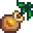
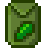
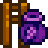

Pierre's General Store
| Pierre's General Store | |
 | |
 | |
| Open Hours: | Shop: 9am to 5pm Building: 9am to 9pm |
| Closed: | Wednesday |
| Address: | North of Town Square |
| Occupants: | |
Pierre's General Store sells various seeds, saplings, fertilizer, ingredients and other useful items. As well as selling those items, Pierre also buys foraged items, crops and crop seeds, artisan goods, cooked dishes, and animal products from the player. This avoids waiting overnight for shipping, but does not count as shipping for the purpose of achievements or collections. Some products in stock, namely seeds, will vary from season to season and others are in-stock year-round. Pierre's main competitor in the valley is JojaMart.
Outside of Pierre's General Store to the left of the entrance, the player can find a calendar and a "Help Wanted" board.
Pierre's General Store is normally open most days at 9am, three hours after the player wakes up, and closes at 5pm. The player can enter the building until 9pm, but Pierre leaves the sales counter at 5pm every day, so the shop cannot actually be used to purchase or sell goods after 5pm. This is because the building also serves as Pierre's family home.
Tip: When purchasing items, you can buy multiples of 5 by holding Shift and  , and multiples of 25 by holding Control+Shift simultaneously and
, and multiples of 25 by holding Control+Shift simultaneously and  .
.
Events
Several events can affect the store's operating hours and stock.
- Pierre stays closed on Wednesday unless all of the Community Center bundles are finished or the player obtains the Key To The Town, and then Pierre's General Store will be open 7 days a week.
- By returning Pierre's Missing Stocklist, he will sell seeds from every season all year-round (at a 50% markup for out-of-season seeds).
- Seeds which are not sold until year 2 will not be included in this stock expansion in year 1, and players will still need to wait until year 2 to purchase them.
- After having 8 hearts of friendship with a marriage candidate, a bouquet of flowers will also be available for purchase.
Year-Round Stock
| Image | Name | Description | Price |
|---|---|---|---|
| Grass Starter | Place this on your farm to start a new patch of grass. | ||
| Grass Starter (Recipe) | A recipe to make Grass Starter | ||
| Sugar | Adds sweetness to pastries and candies. Too much can be unhealthy. | ||
| Wheat Flour | A common cooking ingredient made from crushed wheat seeds. | ||
| Rice | A basic grain often served under vegetables. | ||
| Oil | All purpose cooking oil. | ||
| Vinegar | An aged fermented liquid used in many cooking recipes. | ||
| Basic Fertilizer | Improves soil quality a little, increasing your chance to grow quality crops. Mix into tilled soil. (Available from spring 15 of year 1 onward) |
||
| Quality Fertilizer | Improves soil quality, increasing your chance to grow quality crops. Mix into tilled soil. (Available from year 2 onward) |
||
| Basic Retaining Soil | This soil has a chance of staying watered overnight. Mix into tilled soil. (Available from spring 15 of year 1 onward) |
||
| Quality Retaining Soil | This soil has a good chance of staying watered overnight. Mix into tilled soil. (Available from year 2 onward) |
||
| Speed-Gro | Stimulates leaf production. Guaranteed to increase growth rate by at least 10%. Mix into tilled soil. (Available from spring 15 of year 1 onward) |
||
| Deluxe Speed-Gro | Stimulates leaf production. Guaranteed to increase growth rate by at least 25%. Mix into tilled soil. (Available from year 2 onward) |
||
| Wallpaper (Random each day) | Decorates the walls of one room | ||
| Flooring (Random each day) | Decorates the floor of one room. | ||
| Cherry Sapling | Takes 28 days to produce a mature Cherry tree. Bears fruit in the spring. Only grows if the 8 surrounding "tiles" are empty. | ||
| Apricot Sapling | Takes 28 days to produce a mature Apricot tree. Bears fruit in the spring. Only grows if the 8 surrounding "tiles" are empty. | ||
|  | Orange Sapling | Takes 28 days to produce a mature Orange tree. Bears fruit in the summer. Only grows if the 8 surrounding "tiles" are empty. | |
| Peach Sapling | Takes 28 days to produce a mature Peach tree. Bears fruit in the summer. Only grows if the 8 surrounding "tiles" are empty. | ||
| Pomegranate Sapling | Takes 28 days to produce a mature Pomegranate tree. Bears fruit in the fall. Only grows if the 8 surrounding "tiles" are empty. | ||
| Apple Sapling | Takes 28 days to produce a mature Apple tree. Bears fruit in the fall. Only grows if the 8 surrounding "tiles" are empty. | ||
| Catalogue | Provides unlimited access to all wallpapers and floors... from the convenience of your home! | ||
| Dehydrator (Recipe) | A recipe to make Dehydrator | ||
| Bouquet | A gift that shows your romantic interest. (Unlocked after reaching 8 hearts with a marriage candidate) |
Pierre also sells backpack upgrades that can be purchased by the player. These appear at the right side of the counter, instead of in Pierre's "shop" menu.
| Image | Name | Price | Description | Available |
|---|---|---|---|---|
| Large Pack | Unlocks the 2nd row of inventory (12 more slots, total 24). | At the start of the game | ||
| Deluxe Pack | Unlocks the 3rd row of inventory (12 more slots, total 36). | After purchasing the Large Pack. |
Spring Stock
| Image | Name | Description | Price | |
|---|---|---|---|---|
| Parsnip Seeds | Plant these in the spring. Takes 4 days to mature. | |||
| Bean Starter | Plant these in the spring. Takes 10 days to mature, but keeps producing after that. Grows on a trellis. | |||
| Cauliflower Seeds | Plant these in the spring. Takes 12 days to produce a large cauliflower. | |||
| Potato Seeds | Plant these in the spring. Takes 6 days to mature, and has a chance of yielding multiple potatoes at harvest. | |||
| Tulip Bulb | Plant in spring. Takes 6 days to produce a colorful flower. Assorted colors. | |||
|  | Kale Seeds | Plant these in the spring. Takes 6 days to mature. Harvest with the scythe. | ||
| Jazz Seeds | Plant in spring. Takes 7 days to produce a blue puffball flower. | |||
| Garlic Seeds | Plant these in the spring. Takes 4 days to mature. (Available in year 2+) |
|||
| Rice Shoot | Plant these in the spring. Takes 8 days to mature. Grows faster if planted near a body of water. Harvest with the scythe. (Available in year 2+) |
|||
Summer Stock
| Image | Name | Description | Price | |
|---|---|---|---|---|
| Melon Seeds | Plant these in the summer. Takes 12 days to mature. | |||
| Tomato Seeds | Plant these in the summer. Takes 11 days to mature, and continues to produce after first harvest. | |||
| Blueberry Seeds | Plant these in the summer. Takes 13 days to mature, and continues to produce after first harvest. | |||
| Pepper Seeds | Plant these in the summer. Takes 5 days to mature, and continues to produce after first harvest. | |||
| Wheat Seeds | Plant these in the summer or fall. Takes 4 days to mature. Harvest with the scythe. | |||
| Radish Seeds | Plant these in the summer. Takes 6 days to mature. | |||
| Poppy Seeds | Plant in summer. Produces a bright red flower in 7 days. | |||
| Spangle Seeds | Plant in summer. Takes 8 days to produce a vibrant tropical flower. Assorted colors. | |||
| Hops Starter | Plant these in the summer. Takes 11 days to grow, but keeps producing after that. Grows on a trellis. | |||
| Corn Seeds | Plant these in the summer or fall. Takes 14 days to mature, and continues to produce after first harvest. | |||
| Sunflower Seeds | Plant in summer or fall. Takes 8 days to produce a large sunflower. Yields more seeds at harvest. | |||
| Red Cabbage Seeds | Plant these in the summer. Takes 9 days to mature. (Available in year 2+) |
|||
Fall Stock
| Image | Name | Description | Price | |
|---|---|---|---|---|
| Eggplant Seeds | Plant these in the fall. Takes 5 days to mature, and continues to produce after first harvest. | |||
| Corn Seeds | Plant these in the summer or fall. Takes 14 days to mature, and continues to produce after first harvest. | |||
| Pumpkin Seeds | Plant these in the fall. Takes 13 days to mature. | |||
| Bok Choy Seeds | Plant these in the fall. Takes 4 days to mature. | |||
| Yam Seeds | Plant these in the fall. Takes 10 days to mature. | |||
| Cranberry Seeds | Plant these in the fall. Takes 7 days to mature, and continues to produce after first harvest. | |||
| Sunflower Seeds | Plant in summer or fall. Takes 8 days to produce a large sunflower. Yields more seeds at harvest. | |||
| Fairy Seeds | Plant in fall. Takes 12 days to produce a mysterious flower. Assorted Colors. | |||
| Amaranth Seeds | Plant these in the fall. Takes 7 days to grow. Harvest with the scythe. | |||
|  | Grape Starter | Plant these in the fall. Takes 10 days to grow, but keeps producing after that. Grows on a trellis. | ||
| Wheat Seeds | Plant these in the summer or fall. Takes 4 days to mature. Harvest with the scythe. | |||
| Artichoke Seeds | Plant these in the fall. Takes 8 days to mature. (Available in year 2+) |
|||
Player-Derived Stock
If the player chooses to sell items to Pierre, there is a chance they will appear in the list of items for sale, especially if sold to Pierre in large quantity. Any of these items that are edible will be available for purchase in limited quantities. Additional villager dialogues may appear indicating they've seen or purchased the items. Villagers tend to be disgusted by those of normal quality and enjoy silver or higher quality items.
Living quarters
Abigail's room and Pierre/Caroline's bedroom are to the north of the shop. In the middle is a large area used for exercise class on Tuesdays from 1-4pm, which Caroline, Jodi, Robin, Emily and Marnie will attend. To the top right is the Kitchen and a door to Caroline's sun room. To the east is a shrine of Yoba which is used for religious ceremonies on Sundays.
Bugs
- After obtaining the Key To The Town, Pierre will stand behind the sales counter at 6am. At 7am he will leave the sales counter and walk to the store shelves, and the player will be unable to purchase anything. At 8:30am he will leave the store shelves and return to the sales counter.
Trivia
- Pierre often takes credit for finding or cooking items that the player has sold to him as player-derived stock.
- In Winter, when walking into the shop, Pierre might say: "Welcome to Pierre's heated shop!" Upon talking to him, he says: "Is it just me or is there a cold draft in here?".
- In Winter, when walking into the shop, Pierre might say: "Seeds for sale!" despite not selling seeds during winter.
- When entering Pierre's shop, there is a low chance for a dialogue bubble to pop up with him saying "Did you remember your wallet?".
History
- 1.4: Fixed bug where pressing Alt+Enter inside shop menu would destroy a held item. Pierre no longer accepts fish as player-derived stock; instead Willy does.
- 1.6: Added Dehydrator recipe to the shop's stock. Fixed world map tooltip for Pierres shop still showing closed on Wednesdays after he extends his business hours.